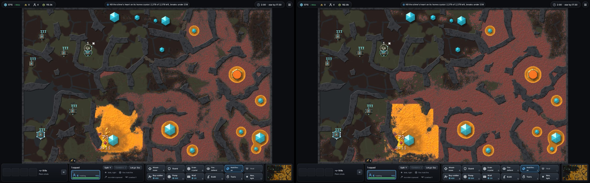
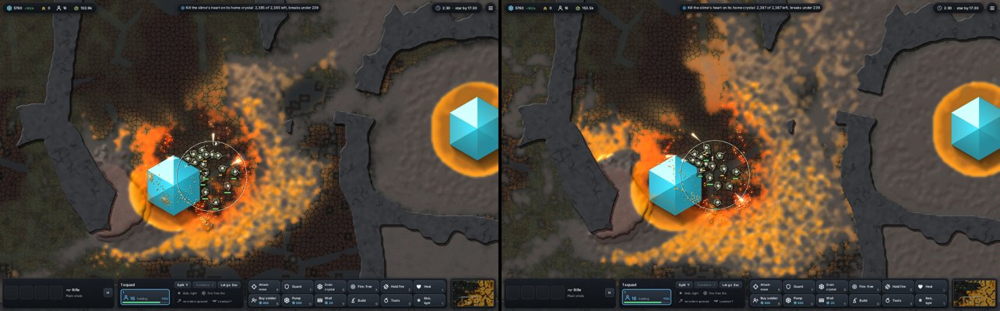

<title>Sleeper Dreams</title>
<meta name="claude:viewport-fit-sides" content="cover">
<link rel="stylesheet" href="https://fonts.googleapis.com/css2?family=Space+Grotesk:wght@500;700&family=Inter:wght@400;600&family=JetBrains+Mono:wght@400&display=swap">
<style>
/* Layout: one reading column; each picture full width with its counts beside it in a small table. */
:root {
  --bg: #f6f3ec; --fg: #23211c; --muted: #6b665a; --line: #ddd6c6; --slime: #b86a00; --panel: #fffdf8;
  --display: "Space Grotesk", "Segoe UI", system-ui, sans-serif;
  --body: "Inter", "Segoe UI", system-ui, sans-serif;
  --mono: "JetBrains Mono", ui-monospace, monospace;
}
@media (prefers-color-scheme: dark) { :root:not([data-theme="light"]) { --bg: #17150f; --fg: #ece6d8; --muted: #a59d8b; --line: #3a352a; --slime: #f0a326; --panel: #1f1c15; color-scheme: dark } }
:root[data-theme="dark"] { --bg: #17150f; --fg: #ece6d8; --muted: #a59d8b; --line: #3a352a; --slime: #f0a326; --panel: #1f1c15; color-scheme: dark }
body { background: var(--bg); color: var(--fg); font: 15px/1.55 var(--body); }
main { max-width: 1320px; margin: 0 auto; padding-block: 28px 60px; padding-left: max(16px, env(safe-area-inset-left, 0px)); padding-right: max(16px, env(safe-area-inset-right, 0px)); display: grid; gap: 34px; }
h1, h2 { font-family: var(--display); text-wrap: balance; margin: 0; }
h1 { font-size: 2rem; }
h2 { font-size: 1.25rem; }
p { margin: 0; max-width: 68ch; }
.lede { display: grid; gap: 10px; }
.eyebrow { font: 12px var(--mono); letter-spacing: .06em; text-transform: uppercase; color: var(--slime); }
section { display: grid; gap: 12px; }
figure { margin: 0; display: grid; gap: 8px; }
figure img, figure video { width: 100%; max-width: 100%; height: auto; border-radius: 6px; background: #000; }
.pair-labels { display: grid; grid-template-columns: 1fr 1fr; font: 12px var(--mono); color: var(--muted); }
figcaption { color: var(--muted); font-size: 13px; max-width: 90ch; }
.tablewrap { overflow-x: auto; }
table { border-collapse: collapse; font-variant-numeric: tabular-nums; font-size: 13px; }
th, td { text-align: right; padding: 4px 12px; border-bottom: 1px solid var(--line); white-space: nowrap; }
th:first-child, td:first-child, th:nth-child(2), td:nth-child(2) { text-align: left; }
th { font-weight: 600; color: var(--muted); }
tr.on td { color: var(--slime); }
.rec { background: var(--panel); border: 1px solid var(--line); border-radius: 8px; padding: 16px 18px; display: grid; gap: 8px; }
code { font: 13px var(--mono); }
ul { margin: 0; padding-left: 20px; max-width: 80ch; }
</style>


<main>
  <div class="lede">
    <div class="eyebrow">Lab prototype · planet 6, the Sleeper · not in the game</div>
    <h1>It grows while it sleeps</h1>
    <p>Enemy's runner-up: the Sleeper is free to farm before it wakes. Asleep it pays nothing, eats nothing and slowly dies, so a squad that farms with its fire held only gets richer while the slime gets smaller. The change: each step a sleeping walker buds a sleeping child beside it with chance P, at no cost, under the slime's birth ceiling and only on ground off the crystals' scent. Now every minute you farm there is more to wake. Left is off, right is P 0.003, in every picture.</p>
  </div>

  <section>
    <h2>Asleep at 2:00, the whole map</h2>
    <figure>
      
      <div class="pair-labels"><span>off · 115,022 walkers</span><span>grows asleep · 162,813 walkers</span></div>
      <figcaption>Planet 6, run seed 1. A squad of 4 pumps the western crystals with its fire held, so no shot is fired. The sleeping body (dark red) spreads over the bare ground round it; the orange patch at the southwest crystal is awake.</figcaption>
    </figure>
    <div class="tablewrap">
      <table>
        <thead><tr><th>Time</th><th>Arm</th><th>Walkers</th></tr></thead>
        <tbody>
          <tr><td>0:01</td><td>all arms</td><td>137,706</td></tr>
          <tr><td>0:30</td><td>off</td><td>129,764</td></tr>
          <tr class="on"><td>0:30</td><td>P 0.003</td><td>146,518</td></tr>
          <tr class="on"><td>0:30</td><td>P 0.01</td><td>167,743</td></tr>
          <tr><td>2:00</td><td>off</td><td>115,022</td></tr>
          <tr class="on"><td>2:00</td><td>P 0.003</td><td>162,813</td></tr>
          <tr class="on"><td>2:00</td><td>P 0.01</td><td>195,239</td></tr>
        </tbody>
      </table>
    </div>
  </section>

  <section>
    <h2>Woken at 2:00, 1:57 to 2:54, zoom 4</h2>
    <figure>
      <video src="wake-clip.mp4" controls muted loop playsinline autoplay></video>
      <div class="pair-labels"><span>off</span><span>grows asleep, P 0.003</span></div>
      <figcaption>At 2:00 the squad spends its bank on soldiers (16) and walks to the slime's western crystal on free fire. A frame every 3 game seconds.</figcaption>
    </figure>
    <figure>
      
      <div class="pair-labels"><span>off · 2:30</span><span>grows asleep · 2:30</span></div>
    </figure>
    <div class="tablewrap">
      <table>
        <thead><tr><th>Arm</th><th>Wake</th><th>Food farmed</th><th>Walkers at the wake</th><th>Squad a minute later</th><th>Killed</th></tr></thead>
        <tbody>
          <tr><td>off</td><td>0:30</td><td>499</td><td>129,764</td><td>16</td><td>19,827</td></tr>
          <tr><td>off</td><td>2:00</td><td>12,320</td><td>115,022</td><td>16</td><td>24,805</td></tr>
          <tr class="on"><td>P 0.003</td><td>0:30</td><td>499</td><td>146,518</td><td>14</td><td>22,283</td></tr>
          <tr class="on"><td>P 0.003</td><td>2:00</td><td>12,320</td><td>162,813</td><td>wiped 2:56</td><td>25,781</td></tr>
          <tr class="on"><td>P 0.01</td><td>0:30</td><td>499</td><td>167,743</td><td>15</td><td>22,349</td></tr>
          <tr class="on"><td>P 0.01</td><td>2:00</td><td>12,320</td><td>195,239</td><td>wiped 2:49</td><td>23,766</td></tr>
        </tbody>
      </table>
    </div>
    <p>Off, waiting is free: the late wake meets a smaller slime with 25 times the food, and the squad stands. Growing asleep, the late wake meets a slime 42% bigger than off's and the 16 soldiers are wiped within a minute. One seed. Between 1:00 and 2:00 a wave woke much of the slime with no shot fired in the off arm too; its cause is not found.</p>
  </section>

  <section class="rec">
    <div class="eyebrow">Recommendation</div>
    <p><b>Build it as the Sleeper's thing</b> at P 0.003, buds off the crystals' scent. Card: "It grows while it sleeps. Every minute you farm, there is more to wake."</p>
    <ul>
      <li>Enemy sets P by play. The birth ceiling (1.5 times the landing here) and the body's free edge slow the growth by themselves.</li>
      <li>A bud on the scent wakes at once and its alarm wakes the body round it (waves of 100,000 with no shot fired, first try), so buds stay off it.</li>
      <li>Look: nothing needed; the spreading sleeping body is the picture.</li>
    </ul>
    <p>Report: <code>Reports/lab-sleeper-2026-11-24/README.md</code>. Code on the lab branch only, <code>3508d9d4</code>. Costs one hash a sleeping walker a step.</p>
  </section>
</main>
